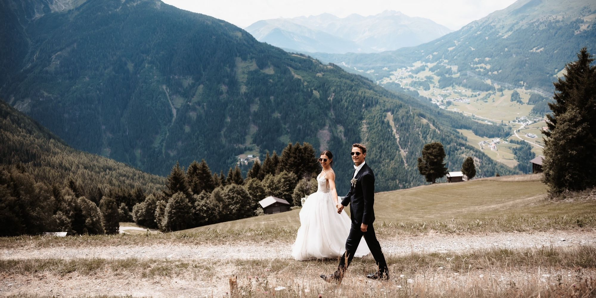

Feiert Eure Liebe!
Freie Trauungen mit Silvia Hendricks
Eine freie Trauung schenkt Euch den Raum, Eure Liebe in Eurem persönlichen Stil zu feiern - mit meiner Moderation und Traurede, die gefühlvoll und bewegend Eure Geschichte erzählen. Gemeinsam gestalten wir einen Moment, der wirklich zu Euch passt und lange in Erinnerung bleibt.


Die Traurede

Als Traurednerin entwickle ich mit Euch eine Zeremonie, die individuell auf Euch zugeschnitten ist und Eure Liebe strahlen lässt. Nach unserem ersten Kennenlernen folgen Fragebogen und Traugespräch. Idealerweise beziehe ich ausgewählte Freundinnen, Freunde oder Verwandte mit ein. So entsteht ein stimmiges Gesamtbild - das Fundament für meine Worte und einen bewegenden wie feierlichen Auftakt Eurer Hochzeitsfeier.
Das bin ich

Ich lebe in München und bin Traurednerin im Nebenberuf - ein Talent, das ich im privaten Umfeld entdeckt habe und das auf meinem Handwerk als Kommunikationsprofi aufbaut. Ich interessiere mich für Menschen und ihre vielfältigen Lebensentwürfe, lasse mich von Büchern, Rockkonzerten und Pferden inspirieren - und liebe seit mehr als 20 Jahren meinen Mann und meinen Sohn.